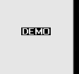

Luego de terminar el taller de ajustes fuimos al ultimo taller que nos faltaba. El taller de soldadura con el profesor Victor Spano que se presento ante nosotros explicando como y que cosa ibamos hacer.Primero nos enseño como soldar practicando con dos fierritos despues ibamos hacer el Trabajo Practico y luego la prueba oral como siempre.El TP se trataba de hacer una Parrilla con sus elementos:el atizador y la palita lo cual tuvimos que pagar $56 por los materiales, se lo dimos al profesor, y la prueba oral, sobre el cuadernillo, debia ser cuando terminemos la parrilla con sus elementos, aunque algunos no la terminaron.En adelante, primero tenia que hacer las manijas que primero nos dio un fierro en forma redonda, larga, y nosotros teniamos que doblarlo con una maquina llamada dobladora-creo que se llama si.Despues de eso tuvimos que hacer las patitas de la parrilla.El profesor nos dio cuatro fierros en forma de rectangulo, chiquitos, y tuvimos que marcar en la parte de arriba 5mm, para abajo y del lado derecho 5 mm y luego tuvimos marcar con el punto de marcar despues lo agujeramos el opunto y luego le tuvimos que dar forma redonda con la demoledora.
Luego de eso tuvimos que hacer las palita que el profesor nos dio un cosa plana que le marcamos 1.5cm de cada lado y luego lo doblamos con la dobladora menos un lado luego la tuvimos que soldar con un fierro largo
PALA
Despues de la palita tuvimos que hacer el atizador que consta de un fierro grueso, forma rectangula que lo tuvimos que doblar 5cm para un costado luego la tuvimos que soldar con un fierro largo. Depues de terminar eso tuvimos que hacer la parrilla.
ATIZADOR
primero cortamos 2 fierro largos de 35cm de ancho y 2 fierro de 29cm de altura.Luego lo soldamos, despues el profesor nos soldo, la parte de afuera, las manijas y nosotros teniamos que soldar la parte de adentroy tambien soldó en forma diagonal, dos fierro, que tienen forma rectangular y los agujereó la parte unida de esos fierro y colocó un tornillo para que la parrilla pueda cerrarse y abrirse para llevarlo a cualquier lado.Luego le soldamos la patitas poniedole dos barillas a cada uno, para que se sostenga y despues tuvimos que cortar y soldar las barillas para la parrilla. Una vez hecho todo esto tuvimos que lijarlo con tela de esmedir para sacarle brillo y que este limpio.
PARRILLA